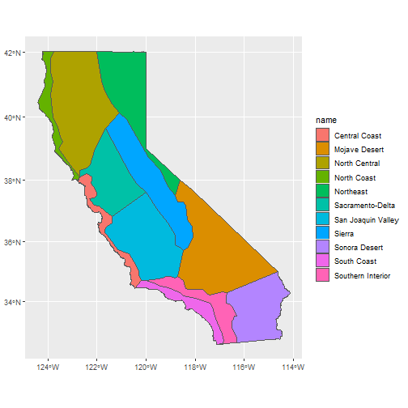
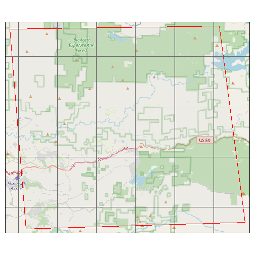

Introduction
Before you can fetch data of any kind from Cal-Adapt, you have to construct an API request object. Creating an API request object is like filling out an order form. Once completed, you feed the API request to a function that actually retrieves data (either tabular or raster).
An API request object contains all the information needed to fetch data, including the location(s) of interest, dataset(s), and time period. In practice, you construct an API request object by stringing together a series of functions that specify the different pieces of the request. Examples:
library(caladaptr)
## Request modeled climate data (from Scripps)
sac_minmaxtemp_cap <- ca_loc_pt(coords = c(-121.4687, 38.5938)) %>% ## pointlocation(s)
ca_gcm(c("HadGEM2-ES", "CNRM-CM5", "CanESM2","MIROC5")) %>% ## GCM(s)
ca_scenario(c("rcp45","rcp85")) %>% ## emission scenarios(s)
ca_cvar(c("tasmin", "tasmax")) %>% ## climate variables
ca_period("year") %>% ## temporal aggregation period
ca_years(start = 1971, end = 2070) ## start and end dates
## Specify Livneh data (observed historical) for a HUC10 watershed
huc_pr_cap <- ca_loc_aoipreset(type = "hydrounits", ## Preset AOI
idfld = "huc10",
idval = "1809020409") %>%
ca_livneh(TRUE) %>% ## Livneh data
ca_cvar("pr") %>% ## precipitation
ca_period("day") %>% ## daily
ca_dates(start = "1960-10-01", end = "2010-09-30") %>% ## start and end dates
ca_options(spatial_ag = "mean") ## spatially aggregate w/ mean
## Specify desired data by slug for irrigated water management districts
irwm_ht_cap <- ca_loc_aoipreset(type = "irwm", idfld = "name") %>% ## Preset AOI
ca_slug(c("exheat_year_ens32avg_historical", ## slug(s)
"exheat_year_ens32avg_rcp45",
"exheat_year_ens32avg_rcp85")) %>%
ca_options(spatial_ag = "max") ## spatially aggregate w/ maxSpecifying Location
All API requests must specify the location(s) of interest. Locations can be specified by points, preset areas-of-interest, or user-provided geoms. All of these options allow you to specify a primary key field which will be included in the results so the results can be joined to the input features.
1) Points
Point locations can be included using ca_loc_pt() if the
points are saved in a vector, matrix or data frame, and
ca_loc_sf() if the points are in a simple feature data
frame.
If points are passed in a matrix, vector or data frame, the first column should be longitude (x), and the second column should be latitude (y). Geographic coordinates are not required if the points are in a sf data frame (but its a good idea). Example:
(ca_loc_pt(coords = c(-122.1, 38.1)))
#> Cal-Adapt API Request
#> Location(s):
#> x: -122.1
#> y: 38.1
#> 2) Preset areas-of-interest
The Cal-Adapt API is integrated with a number of preset polygon
areas-of-interest, also referred to as boundary layers. These
are things like county boundaries, census tracts, watersheds, etc. If
your study area(s) coincide with one of these layers, you can specify
them by name using ca_loc_aoipreset().
To see a list of the available preset layers, run:
aoipreset_types
#> [1] "censustracts" "counties" "cdistricts" "ccc4aregions" "climregions" "hydrounits" "irwm"
#> [8] "electricutilities" "wecc-load-area" "evtlocations" "place"When you use a preset AOI layer in an API request, you can specify
which feature(s) you’re interested in (if you don’t want them all). For
example if you want data summarized by county, you can specify which of
the over 50 counties in California you’re interested in. Two arguments
must be passed to specify features of interest: i) idfld (a
field in the attribute table that has unique values), and ii)
idval (the id numbers or values of the features).
Example:
(ca_loc_aoipreset(type = "counties", idfld = "fips", idval = "06013"))
#> Cal-Adapt API Request
#> Location(s):
#> AOI Preset: counties
#> fips(s): 06013
#> To figure out which fields are available to specify locations for a
given preset layer, you can use the built-in constant
aoipreset_idflds. For example if you’re interested in
counties, you can use the following fields:
aoipreset_idflds$counties
#> [1] "fips" "id"To see the valid values to specify features, use the built-in
constant aoipreset_idval. For example, the ‘Counties’
preset layer has a column named ‘fips’ you can use to specify which
county(s) you’re interested in. The values look like:
All the preset areas of interest can be imported as sf objects using
ca_aoipreset_geom(). For example the climate regions for
the 5th climate change assessment look like:
ca_climregions_sf <- ca_aoipreset_geom("climregions")
#> Reading layer `climregions' from data source `C:\Users\Andy\AppData\Local\R\cache\R\caladaptr\climregions.gpkg' using driver `GPKG'
#> Simple feature collection with 11 features and 2 fields
#> Geometry type: MULTIPOLYGON
#> Dimension: XY
#> Bounding box: xmin: -13848750 ymin: 3833695 xmax: -12705800 ymax: 5163721
#> Projected CRS: WGS 84 / Pseudo-Mercator
library(ggplot2)
ggplot(ca_climregions_sf) + geom_sf(aes(fill = name))
3) User-provided sf features
If Cal-Adapt’s preset areas-of-interest don’t align with your study area(s), you can provide your own locations as a simple feature data frame. Your sf object should have a column with unique values (like OBJECTID) to join the input features to the Cal-Adapt data.
Add locations from a sf object to an API request with
ca_loc_sf(). POINT, POLYGON, and MULTIPOLYGON geometries
are supported. Lines are not supported, and multipoint features must be
converted to simple point features (see st_cast). The
idfld argument specifies a column in the sf object that
contains unique values. If the sf object lacks a column with unique
values, you can add one using mutate(), or provide a vector
of unique id values with idval.
The Cal-Adapt API has limits as to how large a spatial area can be
queried. If your area-of-interest is larger than a county, consider
blocking the area with ca_biggeom_blocks(). If your
locations include multiple points per 6km LOCA grid cell (Cal-Adapt’s
smallest spatial unit), you can group them and just make one call per
grid cell (see the Large Queries
vignette for sample code).
In the next example, we get a sf data frame of the Congressional Districts, and use it to start an API request object.
## Get Congressional Districts as a sf object
(cdistricts_sf <- ca_aoipreset_geom("cdistricts", quiet = TRUE))
#> Simple feature collection with 66 features and 9 fields
#> Geometry type: MULTIPOLYGON
#> Dimension: XY
#> Bounding box: xmin: -13866650 ymin: 3675964 xmax: -12138860 ymax: 6275056
#> Projected CRS: WGS 84 / Pseudo-Mercator
#> First 10 features:
#> statefp cd114fp affgeoid geoid lsad cdsessn aland awater id geom
#> 1 06 11 5001400US0611 0611 C2 114 1278249894 92424585 1 MULTIPOLYGON (((-13628819 4...
#> 2 06 41 5001400US0641 0641 C2 114 819873792 4240410 2 MULTIPOLYGON (((-13086531 4...
#> 3 16 02 5001400US1602 1602 C2 114 111948989280 1081502469 3 MULTIPOLYGON (((-12950296 5...
#> 4 06 50 5001400US0650 0650 C2 114 7219205047 43666727 4 MULTIPOLYGON (((-13053482 3...
#> 5 06 16 5001400US0616 0616 C2 114 7354278768 118616551 5 MULTIPOLYGON (((-13497338 4...
#> 6 49 02 5001400US4902 4902 C2 114 103638076153 2945583941 6 MULTIPOLYGON (((-12696318 4...
#> 7 06 49 5001400US0649 0649 C2 114 1432623041 512378639 7 MULTIPOLYGON (((-13105979 3...
#> 8 06 08 5001400US0608 0608 C2 114 85126210480 450307265 8 MULTIPOLYGON (((-13319259 4...
#> 9 06 20 5001400US0620 0620 C2 114 12624185548 1574913163 9 MULTIPOLYGON (((-13589114 4...
#> 10 06 32 5001400US0632 0632 C2 114 321774529 5320498 10 MULTIPOLYGON (((-13143818 4...
## Start an API request object
(ca_loc_sf(loc = cdistricts_sf, idfld = "geoid"))
#> Cal-Adapt API Request
#> Location(s):
#> Simple Feature MULTIPOLYGON (66 feature(s))
#> ID field: geoid
#> Datasets
A Cal-Adapt API request must also specify the data layers(s) to retrieve. A description of the datasets on Cal-Adapt is beyond the scope of this vignette, but some general guidelines include:
Review the data documentation on Cal-Adapt, including the Introduction to Climate Data webinar.
A local copy of Cal-Adapt data catalog can be retrieved from
ca_catalog_rs(), which returns a tibble. One way to find a dataset for your project is to view the catalog in a RStudio viewer pane and use the filter tool to find specific datasets.
View(ca_catalog_rs())- To search for data layers and view their properties, you can use
ca_catalog_search(), passing it keywords or a slug. Partial matches are returned as well.
ca_catalog_search("pr_day_gridmet")
#>
#> pr_day_gridmet
#> name: gridMET daily precipitation historical
#> url: https://api.cal-adapt.org/api/series/pr_day_gridmet/
#> tres: daily
#> begin: 1979-01-01T00:00:00Z
#> end: 2020-12-31T00:00:00Z
#> units: mm
#> num_rast: 1
#> id: 338
#> xmin: -124.579167
#> xmax: -113.370833
#> ymin: 31.545833
#> ymax: 43.754167Specifying Datasets
Once you’ve identified which dataset you need, add functions to the Cal-Adapt API request. The groups of functions you use to specify datasets fall in three categories: 1) one of the main climate models, 2) observed climate data, and 3) slugs.
Modeled Climate Data
Many of Cal-Adapt’s datasets are based on the direct output of global climate models (e.g., temperature, precipitation) or their derivatives (e.g., snow water equivalent, evaoptranspiration). These models have been used to predict both future and historic conditions based on specific emissions scenarios. API requests for modeled climate data should include:
- climate variable(s) - e.g., tasmin, tasmax, pr, et, etc.
- GCM(s)
- emissions scenario(s)
- temporal period - e.g., year, day, month
To help you construct an API request for modeled climate data, the following built-in constants provide valid values. Note that not all combinations have an existing dataset.
cvars
#> [1] "tasmax" "tasmin" "pr" "swe" "baseflow" "et" "rainfall" "runoff" "snowfall" "soilMoist1"
#> [11] "Tair"
gcms
#> [1] "HadGEM2-ES" "CNRM-CM5" "CanESM2" "MIROC5" "ACCESS1-0" "CCSM4" "CESM1-BGC" "CMCC-CMS" "GFDL-CM3" "HadGEM2-CC"
#> [11] "ens32avg" "ens32max" "ens32min"
scenarios
#> [1] "rcp45" "rcp85" "historical"
periods
#> [1] "day" "month" "year" "30yavg"Example:
(ca_cvar(cvar = "tasmin") %>%
ca_gcm(gcm = gcms[1:4]) %>%
ca_scenario("rcp85") %>%
ca_period("year"))
#> Cal-Adapt API Request
#> Location(s): NA
#> Variable(s): tasmin
#> Temporal aggregration period(s): year
#> GCM(s): HadGEM2-ES, CNRM-CM5, CanESM2, MIROC5
#> Scenario(s): rcp85
#> Observed Data
Livneh data are based on historic records that have been spatially
interpolated. To specify a Livneh dataset, include
ca_livneh() in the request and omit GCMs and emission
scenarios:
(ex2_cap <- ca_cvar(cvar = "pr") %>%
ca_livneh(TRUE) %>%
ca_period("year"))
#> Cal-Adapt API Request
#> Location(s): NA
#> Variable(s): pr
#> Temporal aggregration period(s): year
#> Livneh data: TRUE
#> Slugs
Each of the nearly 950 raster series available through the Cal-Adapt
API has a unique slug, or short name. You can look up slugs
in the Cal-Adapt catalog (ca_catalog_rs()).
If the dataset you’re interested in can’t be specified using the
functions above, you can use ca_slug() to specify it by its
slug. With ca_slug(), you don’t have to include the climate
variable, period, GCM, or scenario - those are all implied by the slug.
But you’ll still need to specify a location and optionally dates for the
API request to be complete.
(ca_slug(slug = "exheat_year_ens32avg_historical"))
#> Cal-Adapt API Request
#> Location(s): NA
#> Slug(s): exheat_year_ens32avg_historical
#> Dates
Date ranges are optional in API requests. If a date range is not
provided, data for the entire time range of the dataset will be
returned. You can include a date range with ca_dates() or
ca_years(). Enter years as integers, and dates as character
values "yyyy-mm-dd". Examples:
Options
ca_options() is how you specify any other options for
the request. Currently the only option in use is
spatial_ag. spatial_ag is the spatial
aggregation function that should be used when querying polygon areas. If
a feature intersects more than one LOCA grid cell, this function will be
used to collapse the grid cells into one value.
(ca_options(spatial_ag = "mean"))
#> Cal-Adapt API Request
#> Location(s): NA
#> Options:
#> spatial ag: mean
#> Checking the integrity of an API request
Before you use an API request to fetch data, there are a couple of things you can do to check its validity.
To verify the API request covers the correct location, you can plot
it. Below we plot a sample API request returned by
ca_example_apireq(). Adding locagrid = TRUE
overlay the actual LOCA grid cells.
(samp_cap <- ca_example_apireq(3))
#> Cal-Adapt API Request
#> Location(s):
#> Simple Feature POLYGON (1 feature(s))
#> ID field: id
#> Variable(s): pr
#> Temporal aggregration period(s): day
#> GCM(s): CCSM4
#> Scenario(s): rcp85
#> Dates: 2010-01-01 to 2012-12-31
#> Options:
#> spatial ag: mean
#>
# Omit `static = TRUE` to get an interactive leaflet map
plot(samp_cap, locagrid = TRUE, static = TRUE)
ca_preflight() does a more complete check of an API
request, double-checking that it refers to an existing dataset, data are
available for the requested date range, the request doesn’t have
conflicting elements, it isn’t too big, etc. Some warnings are specific
to fetching values vs fetching rasters, and are reported
accordingly:
ca_example_apireq(4) %>% ca_preflight()
#> General issues
#> - none found
#> Issues for querying values
#> - none found
#> Issues for downloading rasters
#> - none found